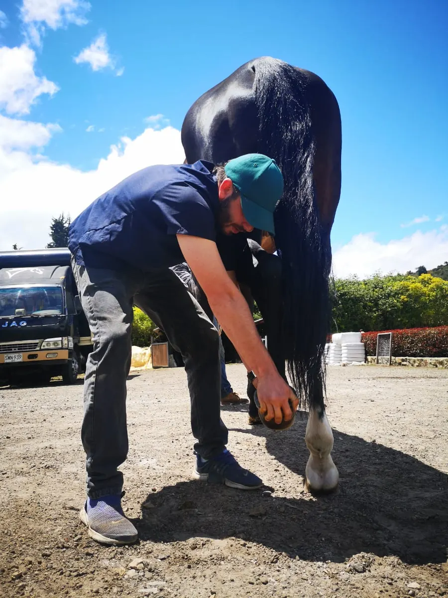
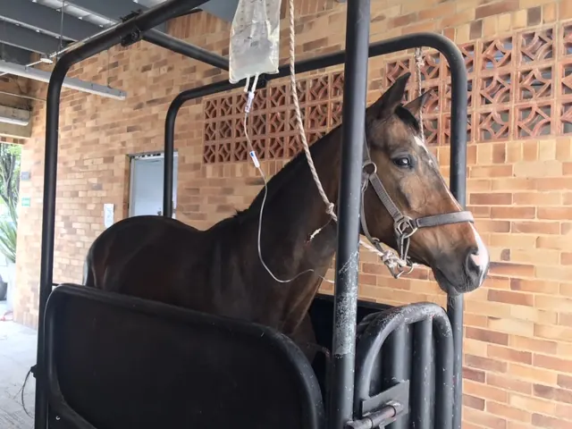
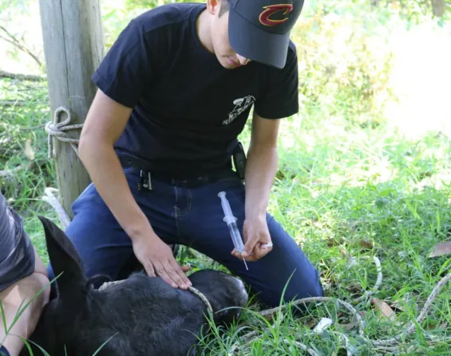

Atención veterinaria para grandes especies.
Muequetá ofrece medicina general y preventiva, urgencias y atención clínica, cirugía de tejidos blandos en campo y reproducción animal para equinos, bovinos y pequeños rumiantes.
Medicina general y preventiva
Cuidar la salud del animal y del hato antes de que aparezca el problema.

Foto del portafolio · autorización pendiente- Consultas integrales de especies mayoresEquinos, bovinos y pequeños rumiantes.
- Medicina preventiva y cuidado de hatoVisitas, planeación de vacunación y control parasitario.
- Controles odontológicos y limado de dientes en equinos
- Exámenes de cojeras (claudicaciones)
- Capacitaciones básicas a empleados
- Asesoría y consultoría en buenas prácticas de manejo
Urgencias y atención clínica
Respuesta clínica cuando un animal está comprometido.

Foto del portafolio · autorización pendiente- Atención de urgencias y emergencias veterinarias en especies mayoresIncluye cólico equino.
- Atención de urgencias las 24 horas, según disponibilidadEscríbenos por WhatsApp y cuéntanos qué pasa.
- Tratamiento y manejo de heridas
- Atención de partos de alto riesgo
- Recepción y cuidados de neonatos
- Asesoría y visitas periódicas a animales de levante y crianza
- Manejo de pacientes críticos de manera ambulatoria
- Hospitalización de ejemplares en la Sabana de Bogotá Confirmar antes de publicar
Atención de urgencias las 24 horas, según disponibilidad. Escríbenos y revisamos tu caso.
Cirugía de tejidos blandos en campo
Procedimientos que no requieren quirófano, realizados donde está el animal.

Foto del portafolio · autorización pendiente- Castraciones
- Descorne y topización
- Corrección de hernias
- Desviaciones de pene en toros receladores
- Amputación de pezones supernumerarios
Importante: estas cirugías se realizan en campo solo cuando el procedimiento no requiere quirófano. Si el caso lo necesita, el equipo lo valora y orienta al propietario.
Reproducción animal
Seguimiento reproductivo, individual y de hato.
- Exámenes reproductivos individuales y de hato
- Colecta y análisis de material seminal
- Seguimiento del ciclo estral en hembras
- Inseminación artificialSemen fresco, refrigerado y congelado.
- Lavado y transferencia de embriones
- Criopreservación de semen
- Diagnóstico y seguimiento de gestaciones
- Atención de distocias
Relación servicio–especie Por confirmar: el portafolio solo declara que las consultas integrales cubren equinos, bovinos y pequeños rumiantes. Aquí no se asigna cada procedimiento a una especie hasta que el cliente lo confirme.
Cuidemos juntos a quien más importa.
Escríbenos y el equipo revisa tu caso.